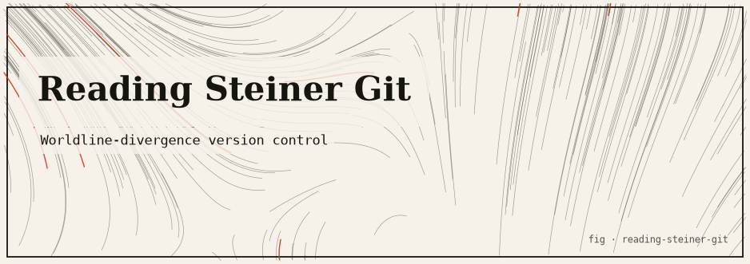

Reading Steiner Git
A Steins;Gate worldline VCS toy that snapshots a sandbox and reports a six-decimal Divergence Meter reading for each checkpoint — your commits as worldline transitions.

The idea
In Steins;Gate, Okabe Rintaro is the only person who can remember timelines across worldline transitions — this is his “Reading Steiner” ability. Each new worldline is labelled by a Divergence Meter reading: a six-decimal number in [0, 2) that identifies the timeline cluster the story currently occupies.
This package treats version control as worldline transitions. Each snapshot (commit) of a sandbox directory is a new worldline, and the snapshot hash is fed through the divergence-meter algorithm to produce a six-decimal reading. Rewriting history is branching into a new worldline; restoring an old snapshot is “Okabe jumps back.” The fun of the framing is that it maps almost exactly onto how a real content-addressable version-control system already behaves.
Content addressing: how Git really identifies a snapshot
Most people think of Git as storing diffs, but underneath it is a content-addressable store. Every object — a file’s contents (a blob), a directory listing (a tree), and a commit — is named by a hash of its own bytes. Save the same file twice and it gets the same address exactly once; change a single byte and it gets a brand-new address. A tree hashes the names and hashes of its children, and a commit hashes the tree plus metadata, so a commit id is effectively a fingerprint of the entire project state at that moment.
Two consequences fall out of this design, and both drive this project. First, integrity: because an object’s name is derived from its contents, you cannot alter the contents without changing the name — tampering is self-evident. Second, the avalanche effect: cryptographic hashes are built so that flipping one input bit flips roughly half the output bits. A one-character edit anywhere in the sandbox yields a totally different digest, with no visible relationship to the previous one. That is precisely the behaviour a “divergence” reading wants: adjacent worldlines that look unrelated.
How this project demonstrates it
- Snapshots a sandbox directory by hashing all file contents with SHA-256 — the same content-addressing idea Git uses for blobs and trees.
- The combined snapshot hash is fed through the divergence-meter algorithm (identical to the
divergence-meter package): the leading bytes become a 64-bit word and
Fraction(word, 2^63)yields an exact value in [0, 2), formatted to six decimals. - Checkpoints are stored as an atomic-write JSON ledger, so a crash mid-write can never leave a half-written, corrupt history — the file is either the old state or the new one.
- The CLI prints the divergence reading for the current sandbox state and the divergence delta from the previous checkpoint, making the avalanche effect visible: small edits, large jumps.
Reading Steiner Git questions
What is content-addressable version control?
It is a system that identifies each snapshot by a hash of its contents rather than by a sequential name. If the contents are identical the address is identical; if anything changes the address changes. Git works this way, addressing blobs, trees, and commits by their SHA hashes.
Why does a one-character edit change the entire hash?
Cryptographic hashes have the avalanche property: flipping a single input bit flips about half the output bits. So a tiny file edit produces a completely different digest, which is what makes the worldline reading jump between checkpoints.
Is this actually Git?
No. It borrows Git’s core idea — content addressing of directory snapshots — but it is a small standalone toy that stores checkpoints in an atomic-write JSON ledger and maps each digest to a six-decimal divergence reading.
Honest caveat: the Steins;Gate worldline story is fiction and this is not a drop-in replacement for Git — there is no networking, no packfiles, and no merge algorithm. What is real is the content-addressing principle: snapshots named by their own hash, with edits rippling through the digest exactly as they do in Git’s object model.
Run it
git clone https://github.com/caelum0x/awesome-mad-projects.git cd reading-steiner-git npm install npm run build # Snapshot your sandbox node dist/index.js snapshot ./my-sandbox # Output: # Worldline 0001: 0.847312 [Alpha attractor] # (make changes to ./my-sandbox) # Worldline 0002: 1.193847 [Beta attractor] # Divergence delta: +0.346535